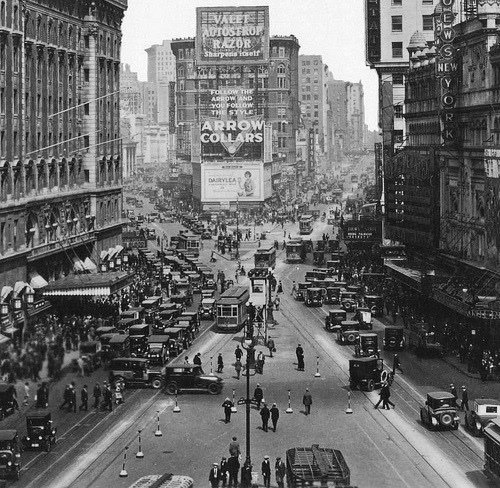

Countries represented
Early recordings arranged by countries. The most frequently encounted countries are listed, while there is a category "Others" for nations that have only a few sound samples. Thus arranged, the recordings will help understand nationalistic differences in playing styles and techniques, like vibrato and portamento.
Pick a country to filter horn players by nationality
France
Germany
Spain
United Kingdom

United States
Others
- Berger, Hans (1907-1996)
- Borsdorf, Adolf (1854-1923)
- Busby, Thomas (1862-1933)
- Épinoux, Émile (1874-1951)
- Freiberg, Gottfried von (1908-1962)
- Hodin, Albert (1891-xxxx)
- Horner, Anton (1877-1971)
- Mont, Álvaro (1890-1942)
- Morin, Alphonse (1895-1934)
- Stiegler, Karl (1876-1932)
- Vuillermoz, Édouard (1869-1939)